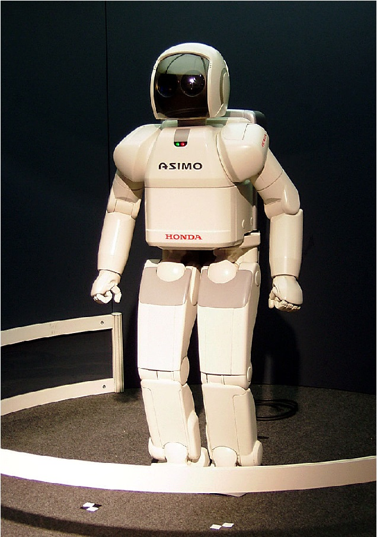
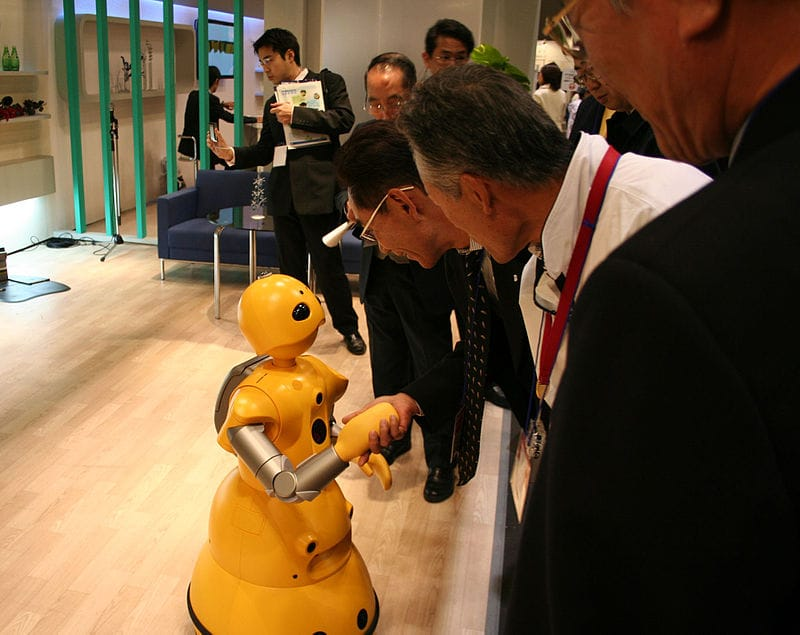
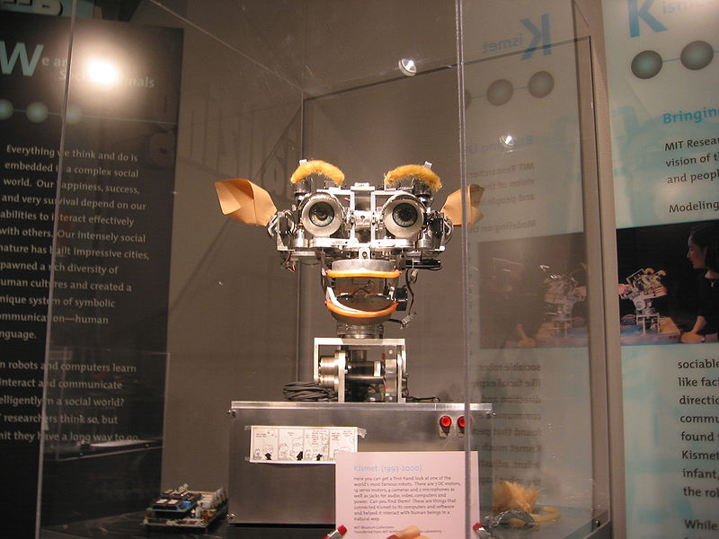

Artificial intelligence is a challenging and important science of philosophy; For claiming the ability to recreate the capabilities of the human mind
Are there limits to how intelligent machines are? Is there a fundamental difference between human and artificial intelligence? Can the machine have a mind and awareness? A few of the most important answers to these questions are given below.
Calculating machines and intelligence "Turing Law" If the device works with an intelligence comparable to a person, then its intelligence is the same as human intelligence. Alan Turing's theory states that, ultimately, we can only judge the intelligence of a machine based on its performance. This theory forms the basis of the Turing test.
